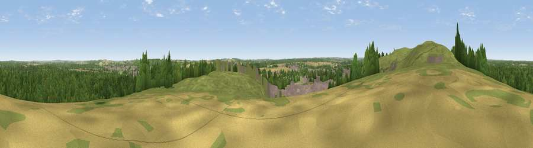

Viewpoint near Ollerton
#35806 in England · top 55% of its area beats it · near OllertonWhere it is
The exact computed spot (SK 63825 67925). Click the marker for map links.
The view, rendered

A 360° render of this exact spot computed from the terrain model, tree cover and land cover — summer colours, afternoon light, calibrated against photographs of famous viewpoints. Real trees, hedges and buildings will differ in detail.
The panorama
Grey silhouette: terrain skyline in each direction (720 bearings, Earth curvature and refraction included). Dashed green: skyline with trees (+15 m) and buildings (+8 m) as obstacles. Blue strip: how far the ground is visible on each bearing.
Where the view opens
Wedge length = distance to the farthest visible ground on that bearing (vegetation-aware). Rings at 10, 25 and 50 km.
What fills the view
42% woodland · 31% grassland · 17% cropland · 9% built-up · 2% bare ground
Angular shares of the visible panorama (visual magnitude), not map area. Landscape diversity 0.57 (0–1 Shannon).
Key numbers
More beautiful places nearby
The staircase of upgrades: each row has a higher view potential than everything closer. Driving times are estimates from straight-line distance, calibrated against real road routing — check an actual route before setting out.
| Place | Direction | Drive | Score |
|---|---|---|---|
| Burstheart Hill [Thoresby Colliery] | WNW · 1 km | ~2 min | 69.3 |
| Viewpoint near Maltby | NNW · 26 km | ~42 min | 70.7 |
| Crich Stand | WSW · 32 km | ~49 min | 73.0 |
| Alport Height | WSW · 37 km | ~56 min | 73.9 |
| Viewpoint near Wharncliffe Side | NW · 43 km | ~63 min | 75.2 |
| Tissington Hill | WSW · 51 km | ~72 min | 75.5 |
| Viewpoint near Woodhouse Eaves | SSW · 55 km | ~76 min | 77.7 |
| Viewpoint near Mow Cop | W · 78 km | ~102 min | 78.9 |
53.20457, -1.04590 · source: screening · position refined by local search. Computed location — check access rights before visiting.